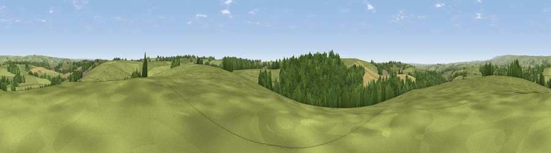

Viewpoint near Knowstone
#25919 in England · top 50% of its area beats it · near KnowstoneThe view, rendered

A 360° render of this exact spot computed from the terrain model, tree cover and land cover — summer colours, afternoon light, calibrated against photographs of famous viewpoints. Real trees, hedges and buildings will differ in detail.
The panorama
Grey silhouette: terrain skyline in each direction (720 bearings, Earth curvature and refraction included). Dashed green: skyline with trees (+15 m) and buildings (+8 m) as obstacles. Blue strip: how far the ground is visible on each bearing.
Where the view opens
Wedge length = distance to the farthest visible ground on that bearing (vegetation-aware). Rings at 10, 25 and 50 km.
What fills the view
62% grassland · 29% woodland · 9% cropland
Angular shares of the visible panorama (visual magnitude), not map area. Landscape diversity 0.39 (0–1 Shannon).
Key numbers
More beautiful places nearby
The staircase of upgrades: each row has a higher view potential than everything closer. Driving times are estimates from straight-line distance, calibrated against real road routing — check an actual route before setting out.
| Place | Direction | Drive | Score |
|---|---|---|---|
| Viewpoint near Knowstone | SW · 1 km | ~3 min | 57.0 |
| Viewpoint near Rose Ash | W · 5 km | ~10 min | 58.4 |
| Viewpoint near West Anstey | N · 6 km | ~13 min | 62.2 |
| Stoodleigh Beacon | SE · 6 km | ~14 min | 66.7 |
| Viewpoint near Twitchen | NNW · 11 km | ~21 min | 69.1 |
| Viewpoint near Skilgate | ENE · 14 km | ~26 min | 72.5 |
| Viewpoint near Simonsbath | NNW · 16 km | ~28 min | 73.1 |
| Viewpoint near Brayford | NW · 17 km | ~30 min | 74.1 |
50.98978, -3.66590 · source: screening · position refined by local search. Computed location — check access rights before visiting.